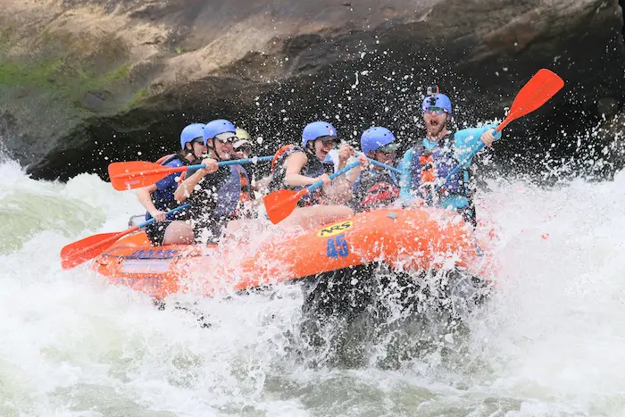
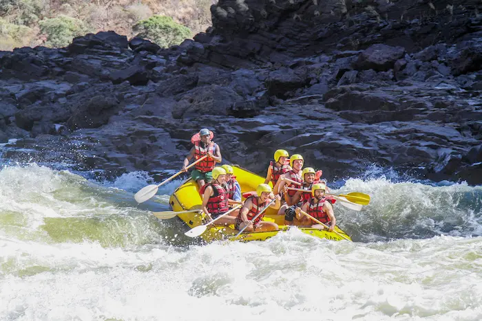

Water Snake Rapids
White Water Rafting

Water Snake Rapids - Trips
Poseidon's Revenge
It is said that the Greek God's battled in this very location. As if the anger from the battle was still brewing beneath the surface, Posidon's Revenge provides the ultimate thrill adventure. Wheather beginner or vetran this adventure will have you cursing Poseidon's name.
Joy Ride

Joy Ride is a mild entry to the Snake. We use Joy Ride to teach those that have already taken the hour long training course designed to teach riders the importance of listening and obeying the guide. Altough it is one of the most calm adventures it will get the blood pumping.
Dead Chief
Rumor has it Chief Wanahakalugi was upset with this medician women, as his wife passed away in childbirth. He stormed off in his anger taking one of the canoes. He wasn't seen again for three days when his oldest son formed a search party and found the old chief washed up on the ridge of turn seven of what is now called Dead Chief.